Jak wysyłać, cofać i aktualizować katalogi zdjęć produktów – krok po kroku, na prawdziwych przykładach.
PUSHWyślij
Wysyła gotowy katalog zdjęć ze Ścieżki A.
PULLCofnij
Zabiera wysłany katalog z powrotem do Ścieżki A.
UPDATEAktualizuj katalog
Poprawia pliki w katalogu, który już został wysłany.
Wersja z 17 września 2026 r. · Zrzuty ekranu wykonano w środowisku testowym https://dev.ff.vitkac.local na koncie tester,
na katalogach OZDOBA PS261403 0-BRASS i TORBA HB0788 FA0542-910 SILVER (folder A:/tester).
Numery operacji (np. #35) pochodzą z tych testów – u Ciebie będą inne.
Menedżer plików przenosi katalogi ze zdjęciami produktów z miejsca, w którym je przygotowujesz, do miejsca, z którego korzysta sklep. Robi to za pomocą trzech operacji.
Ścieżka Atu przygotowujesz katalogi zdjęć
Wyślij (PUSH)→←Cofnij (PULL)
Miejsce docelowestąd zdjęcia trafiają do PIM i sklepu
↻Aktualizuj katalog (UPDATE)
Pojęcie
Co to znaczy
Katalog
Folder ze zdjęciami jednego produktu. Jego nazwa to nazwa produktu, np. TORBA HB0788 FA0542-910 SILVER.
Ścieżka A
Folder sieciowy, w którym przygotowujesz katalogi. W aplikacji jego początek oznaczony jest jako A:, a dalsze foldery po ukośniku, np. A:/tester. W środowisku testowym to udział \\192.168.100.4\DaneFoto-test.
PUSH – przycisk Wyślij →
Kopiuje katalog do miejsca docelowego i usuwa go ze Ścieżki A. System PIM dostaje automatyczne powiadomienie o nowym katalogu.
PULL – przycisk ← Cofnij
Odwrotność wysłania: kopiuje katalog z powrotem do Ścieżki A (w to samo miejsce, z którego był wysłany) i usuwa go z miejsca docelowego. PIM dostaje powiadomienie o wycofaniu.
UPDATE – przycisk Aktualizuj katalog
Zmienia pliki w katalogu, który już został wysłany: zmiana nazwy, usunięcie, zastąpienie, dodanie pliku. Nie trzeba niczego cofać. PIM dostaje powiadomienie o zmianie.
Historia operacji
Lista wszystkich wysłań, cofnięć i aktualizacji (także innych osób). Stąd wybierasz katalog do cofnięcia lub aktualizacji.
Nazwy w aplikacjiPrzyciski mają polskie nazwy (Wyślij, Cofnij, Aktualizuj katalog), a w historii operacji i w oknach potwierdzeń pojawiają się angielskie skróty PUSH, PULL, UPDATE oraz nazwy PATH_B (miejsce docelowe) i PATH_C (archiwum). Oznaczają dokładnie to samo.
Typowy dzień pracy
Przygotowujesz folder produktu ze zdjęciami 1.jpg, 2.jpg… w Ścieżce A.
Klikasz folder prawym przyciskiem w Eksploratorze Windows → Przygotuj zaznaczone do wysłania przez RFM (albo sam wyszukujesz go w aplikacji).
W aplikacji klikasz Wyślij → i potwierdzasz.
Jeśli trzeba coś poprawić – wybierasz katalog w historii i klikasz Aktualizuj katalog.
Jeśli katalog w ogóle nie powinien być wysłany – wybierasz go w historii i klikasz ← Cofnij.
2Zasady dobrego katalogu
Zanim cokolwiek zostanie wysłane lub zaktualizowane, aplikacja sprawdza katalog. Jeśli któraś zasada nie jest spełniona, operacja się nie wykona i nic nie zostanie zmienione. Oto zasady obowiązujące w chwili pisania instrukcji:
#
Zasada
Przykład
1
Nazwa folderu = nazwa istniejącego produktu w systemie (PolkaSQL).
OZDOBA PS261403 0-BRASS ✓. Przy literówce aplikacja może podpowiedzieć podobne nazwy produktów.
Plik musi naprawdę być zdjęciem w podanym formacie.
Dokument ze zmienioną końcówką na .jpg zostanie odrzucony.
5
Pliki systemowe są pomijane i usuwane.
Thumbs.db, desktop.ini, ehthumbs.db, .DS_Store, ._*, .localized, .apdisk – nie liczą się do zdjęć i nie są wysyłane.
Dobra praktykaTrzymaj w katalogu wyłącznie ponumerowane zdjęcia, bez podfolderów i innych plików. Wtedy wysyłka zawsze przejdzie za pierwszym razem.
Jak wygląda odmowa
Gdy zasada nie jest spełniona, pojawi się okno „Nie można kontynuować” z nazwą katalogu, powodem i podsumowaniem. Poniżej przykład z testu: próbowaliśmy zmienić nazwę pliku 1.png na okladka.png. Aplikacja odmówiła, a katalog pozostał bez zmian.
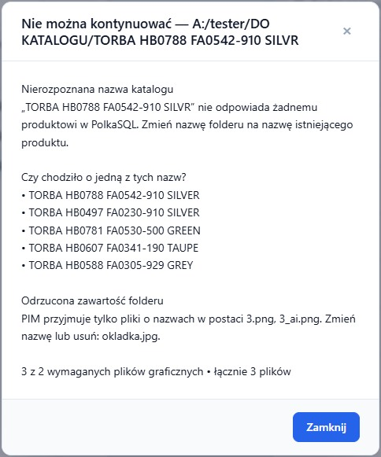
Rys. 1. Odmowa z powodu złej nazwy pliku. Wiersz „7 z 2 wymaganych plików graficznych” znaczy: jest 7 zdjęć, a wymagane są co najmniej 2.
Komunikat w oknie
Co zrobić
„Nierozpoznana nazwa katalogu” / „… nie odpowiada żadnemu produktowi w PolkaSQL”
Popraw nazwę folderu. Jeśli pod spodem są podpowiedzi („Czy chodziło o jedną z tych nazw?”), użyj właściwej.
„Ten folder zawiera X plików graficznych; wymagane są co najmniej 2.”
Dodaj zdjęcia.
„PIM przyjmuje tylko pliki o nazwie <numer>.<rozszerzenie>…”
Zmień nazwy wymienionych plików na numery albo je usuń.
„Niektóre pliki nie są w rzeczywistości obrazami…”
Usuń lub podmień wymienione pliki na prawdziwe zdjęcia.
„Nie można połączyć się z PolkaSQL…” / „…nie odpowiedział w wyznaczonym czasie”
Spróbuj ponownie za chwilę. Gdy się powtarza – zgłoś administratorowi.
3Logowanie i ekran główny
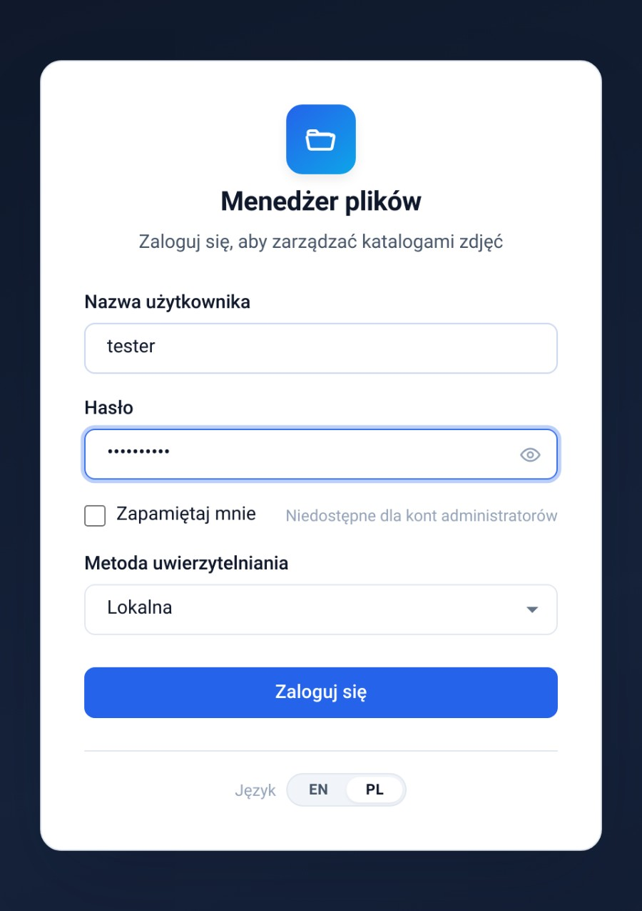
Rys. 2. Ekran logowania
Otwórz adres Menedżera plików w przeglądarce (środowisko testowe: https://dev.ff.vitkac.local).
Wpisz Nazwę użytkownika i Hasło. Ikona oka pokazuje wpisane hasło.
Wybierz Metodę uwierzytelniania:
PolkaSQL – logowanie kontem z systemu PolkaSQL,
Lokalna – konto założone bezpośrednio w Menedżerze plików (np. konto tester).
Jeśli nie wiesz, którą wybrać – zapytaj administratora.
Opcjonalnie zaznacz Zapamiętaj mnie.
Kliknij Zaloguj się.
„Zapamiętaj mnie”
Co się dzieje
nie zaznaczone
Wylogujesz się po zamknięciu karty lub przeglądarki.
zaznaczone
Pozostajesz zalogowany do 30 dni, także po zamknięciu przeglądarki. Opcja nie działa dla kont administratorów.
Przełącznik EN / PL na dole zmienia język ekranu logowania.
Ekran główny – co gdzie jest
Ekran ma trzy części: po lewej Ścieżka A (Twoje foldery), w środku przyciski operacji, po prawej Historia operacji.
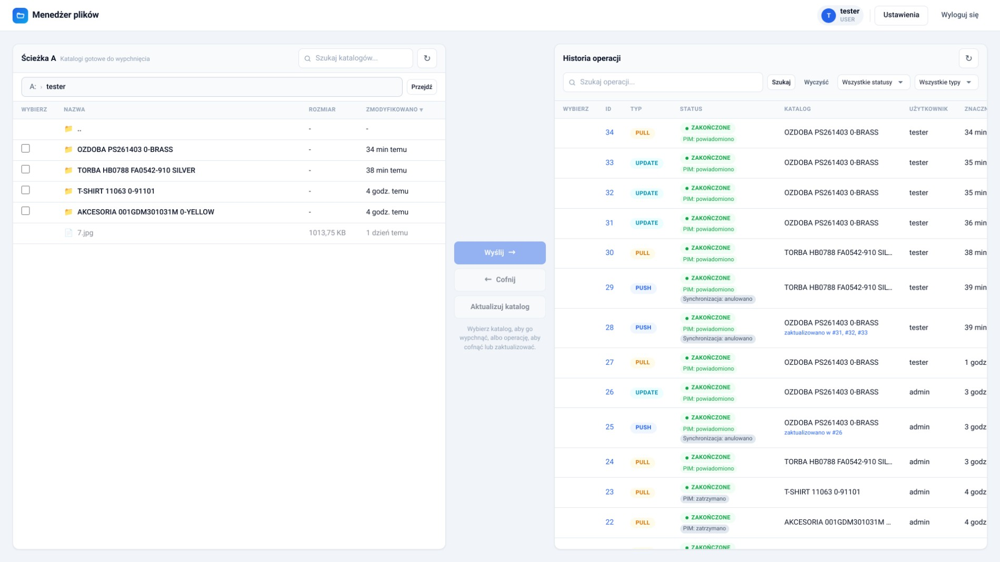
12345678910111213
Rys. 3. Ekran główny po przejściu do folderu A:/tester
1Ścieżka A – lista folderów i plików.
2Pasek ścieżki – gdzie jesteś; kliknij, aby przejść wyżej lub wpisać ścieżkę.
3Szukaj katalogów… – zawęża listę do pasujących nazw.
4↻ Odśwież listę Ścieżki A.
5Pola wyboru – zaznaczasz foldery do wysłania.
6Nazwa folderu – kliknięcie otwiera folder.
7Pliki – widoczne na szaro, nie można ich wysłać osobno.
8Wyślij / Cofnij / Aktualizuj katalog.
9Szukaj operacji… w historii.
10Filtry statusu i typu operacji.
11Wybierz / ID – kółko wyboru operacji i jej numer (klik = szczegóły).
12Status i znaczki PIM / synchronizacji.
13Ustawienia i Wyloguj się.
Każdą z tych części szczegółowo opisuje rozdział 9.
4Przygotowanie katalogów prosto z Eksploratora Windows
Na komputerach z zainstalowanym dodatkiem RFM (program RFMLauncher) nie musisz szukać folderów w aplikacji. Wystarczy kliknąć je prawym przyciskiem myszy w zwykłym Eksploratorze Windows.
Rys. 4. Ilustracja poglądowa: dwa foldery zaznaczone w Eksploratorze Windows i menu z pozycjami RFM. Pozostałe pozycje menu i jego wygląd zależą od wersji Windows.
Krok po kroku
Otwórz w Eksploratorze Windows folder sieciowy ze zdjęciami (ten sam, który w aplikacji jest Ścieżką A), np. \\192.168.100.4\DaneFoto-test\tester.
Zaznacz jeden lub kilka folderów produktów (kilka: przytrzymaj Ctrl i klikaj).
Kliknij zaznaczenie prawym przyciskiem myszy. W Windows 11 najpierw kliknij Pokaż więcej opcji (albo od razu użyj Shift + prawy przycisk).
Wybierz Przygotuj zaznaczone do wysłania przez RFM.
Otworzy się przeglądarka z Menedżerem plików. Aplikacja sama przejdzie do właściwego folderu i zaznaczy wybrane katalogi (Rys. 5). Jeśli nie byłeś zalogowany w przeglądarce, zaloguje Cię automatycznie.
Sprawdź zaznaczenie i kliknij Wyślij → – dalej jak w rozdziale 5.
Rys. 5. Prawdziwy efekt „Przygotuj…” dla folderów OZDOBA i TORBA: aplikacja otworzyła A:/tester i zaznaczyła oba katalogi. Przycisk Wyślij jest aktywny.
Pozycja menu
Co robi
Przygotuj zaznaczone do wysłania przez RFM
Otwiera aplikację i zaznacza katalogi. Nic nie wysyła – decyzję podejmujesz przyciskiem Wyślij. Zalecana.
Wyślij zaznaczone przez RFM
Robi to samo, a następnie od razu uruchamia wysyłanie. Zobaczysz zwykłe okno potwierdzenia wysyłki (chyba że wyłączyłeś je w Ustawieniach – wtedy wysyłka ruszy bez pytania).
Kiedy pozycji RFM nie ma w menu
Zaznaczyłeś choć jeden plik – menu RFM pojawia się tylko, gdy zaznaczone są wyłącznie foldery.
Folder leży poza dozwolonym miejscem ustawionym przez administratora (np. na pulpicie).
W Windows 11 nie kliknąłeś Pokaż więcej opcji.
Przy kilku folderach naraz wszystkie muszą leżeć w tym samym folderze nadrzędnym – foldery z innego miejsca zostaną pominięte.
Pierwsze użycie – autoryzacja urządzenia
Przy pierwszym użyciu menu (albo gdy zapisane logowanie wygaśnie) komputer musi zostać połączony z Twoim kontem:
Po wybraniu pozycji RFM przeglądarka otworzy stronę Autoryzacja urządzenia z kodem (Rys. 6).
Kliknij Zatwierdź urządzenie. Jeśli nie jesteś zalogowany, aplikacja najpierw poprosi o zalogowanie, a potem wróci na tę stronę – kliknij przycisk ponownie.
Pojawi się komunikat „Urządzenie zostało pomyślnie autoryzowane! Możesz zamknąć to okno.”
Chwilę później otworzy się Menedżer plików z zaznaczonymi katalogami.
Kolejne użycia nie wymagają tego kroku. Logowanie jest bezpiecznie zapisane w Windows.
UwagaKlikaj Zatwierdź urządzenie tylko wtedy, gdy sam przed chwilą użyłeś menu RFM. Jeśli strona z kodem otworzyła się bez Twojej akcji – kliknij Odrzuć. Kod jest ważny ograniczony czas; po wygaśnięciu po prostu użyj menu ponownie.
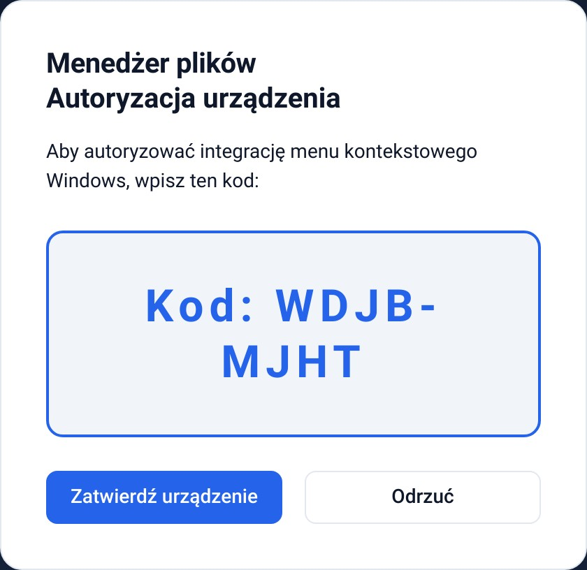
Rys. 6. Strona autoryzacji urządzenia (kod przykładowy)
5Wysyłanie katalogu – PUSH
Przykład: wysyłamy katalogi OZDOBA PS261403 0-BRASS i TORBA HB0788 FA0542-910 SILVER z folderu A:/tester.
Przejdź do folderu z katalogami. Kliknij nazwę folderu na liście (np. tester) albo wpisz ścieżkę w pasku (Rys. 7). Jeśli użyłeś menu Windows (rozdział 4), ten krok i następne dwa masz już zrobione.
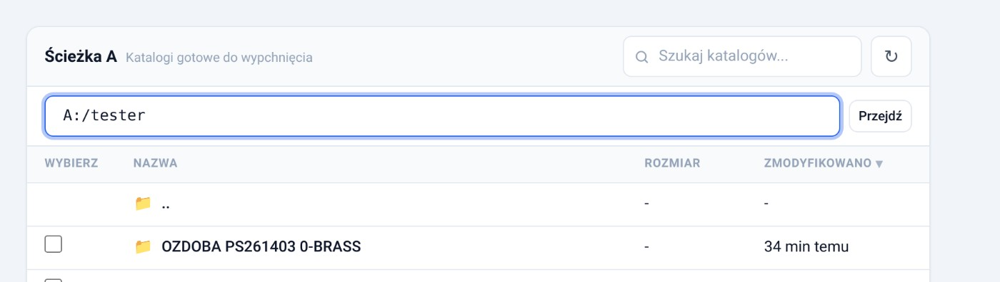
Rys. 7. Wpisywanie ścieżki: kliknij pasek, wpisz A:/tester i naciśnij Enter lub Przejdź
(Opcjonalnie) zajrzyj do środka. Kliknięcie nazwy katalogu pokazuje jego pliki. Wrócisz, klikając .. lub nazwę folderu wyżej w pasku ścieżki.
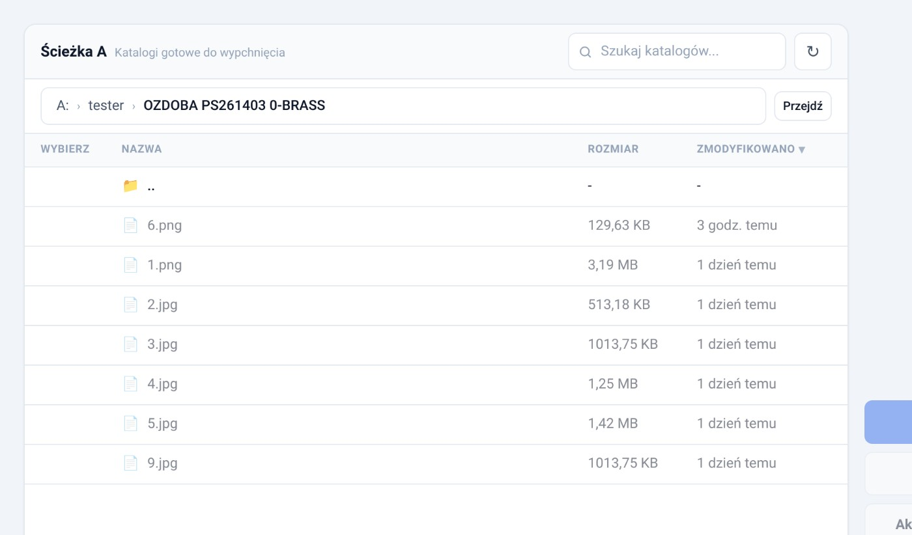
Rys. 8. Zawartość katalogu OZDOBA przed wysłaniem: 7 zdjęć o nazwach numerowych
Zaznacz pole wyboru przy katalogu (albo kliknij puste miejsce w jego wierszu, np. w kolumnie „Rozmiar”). Zaznaczony wiersz jest podświetlony, a przycisk Wyślij → staje się aktywny. Możesz zaznaczyć kilka katalogów naraz.
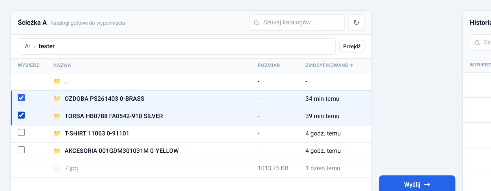
Rys. 9. Zaznaczone dwa katalogi – przycisk „Wyślij” jest aktywny
Klikanie nazwy a zaznaczanieKliknięcie nazwy katalogu otwiera go (nie zaznacza). Aby zaznaczyć, klikaj pole wyboru lub inne miejsce wiersza.
Kliknij Wyślij → i przeczytaj okno potwierdzenia.
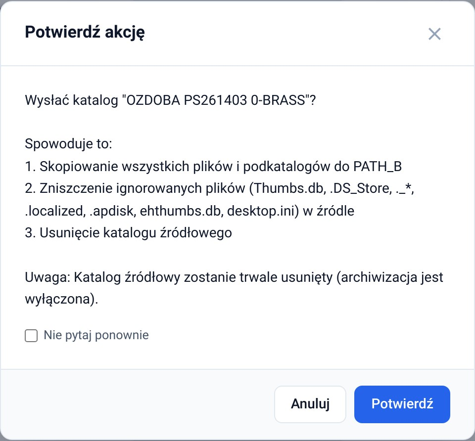
Rys. 10. Potwierdzenie dla jednego katalogu
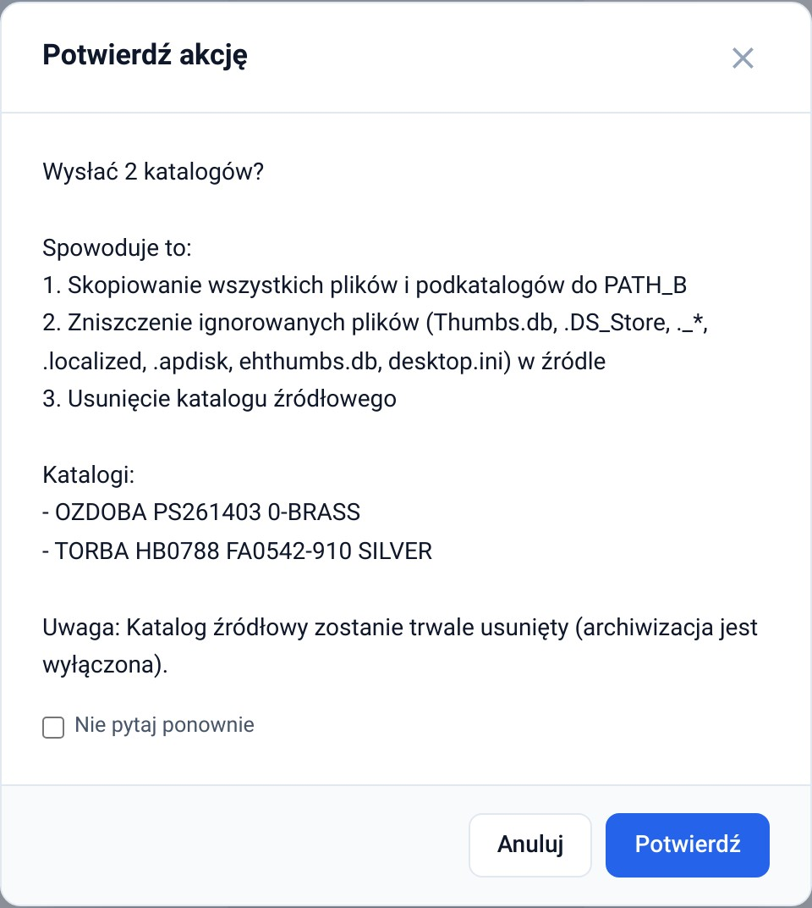
Rys. 11. Potwierdzenie dla dwóch katalogów – z ich listą
Punkt w oknie
Po ludzku
Skopiowanie wszystkich plików i podkatalogów do PATH_B
Katalog zostanie skopiowany do miejsca docelowego.
Zniszczenie ignorowanych plików (Thumbs.db, .DS_Store, …) w źródle
Pliki systemowe nie są wysyłane i zostaną usunięte.
Usunięcie katalogu źródłowego
Po udanym skopiowaniu katalog zniknie ze Ścieżki A.
Uwaga: Katalog źródłowy zostanie trwale usunięty (archiwizacja jest wyłączona).
Nie powstaje dodatkowa kopia w archiwum. Katalog odzyskasz tylko przez Cofnij (PULL).
Treść okna zależy od ustawień administratora. Gdy archiwizacja jest włączona, zamiast „Usunięcie katalogu źródłowego” zobaczysz „Zarchiwizowanie źródła w PATH_C”. Pole Nie pytaj ponownie wyłącza to okno na przyszłość (włączysz je z powrotem w Ustawieniach).
Kliknij Potwierdź. W prawym dolnym rogu pojawi się zielony komunikat, np. „Rozpoczęto wysyłanie dla 2 katalogów”. Katalogi znikną ze Ścieżki A, a w historii pojawią się nowe wiersze PUSH. Przycisk Wyślij znów jest nieaktywny, bo nic nie jest zaznaczone.
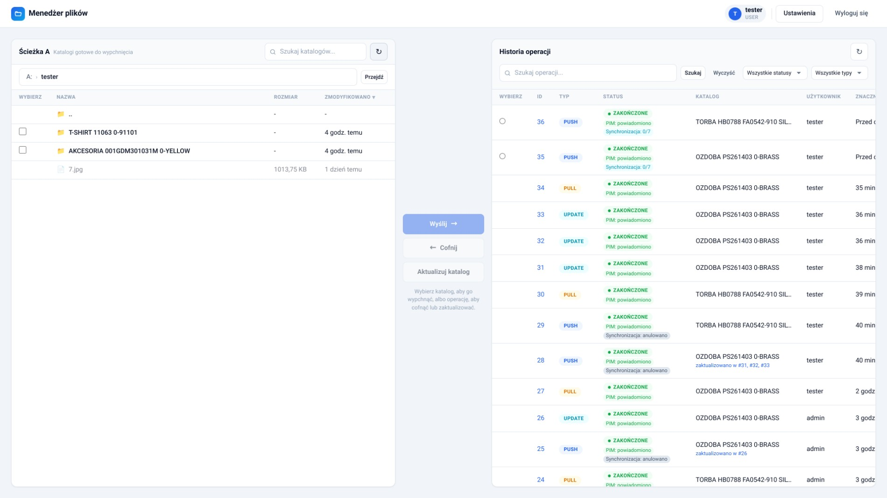
Rys. 12. Po wysłaniu: w Ścieżce A nie ma już OZDOBA i TORBA, w historii są operacje PUSH #35 (OZDOBA) i #36 (TORBA) ze statusem „Zakończone”
Co się dzieje po wysłaniu
Status Zakończone oznacza, że pliki są już w miejscu docelowym. Pod statusem aplikacja pokazuje dalsze, automatyczne kroki:
Znaczek
Znaczenie
PIM: powiadomiono
System PIM dostał informację o katalogu. Gdy PIM chwilowo nie odpowiada, widać PIM: ponawianie (1) – aplikacja sama spróbuje ponownie.
Synchronizacja: czeka na PIM → Synchronizacja: 2/7 → Zsynchronizowano 7/7
Aplikacja co kilka minut sprawdza, ile zdjęć pojawiło się już na serwerze zdjęć sklepu (np. 2 z 7). Sprawdzanie trwa maksymalnie 3 godziny.
Wszystkie znaczki opisuje punkt 9.5. Nie musisz na nie czekać – możesz od razu wysyłać kolejne katalogi.
Gdy część katalogów zostanie odrzuconaPrzy wysyłaniu kilku katalogów każdy jest sprawdzany osobno. Poprawne zostaną wysłane, a dla każdego odrzuconego pojawi się okno „Nie można kontynuować — ścieżka katalogu” z powodem (patrz rozdział 2). Odrzucony katalog zostaje w Ścieżce A bez zmian.
6Cofanie katalogu, który nie był aktualizowany – PULL
Przykład: cofamy wysłanie katalogu TORBA HB0788 FA0542-910 SILVER (operacja PUSH #36). Katalog nie był zmieniany po wysłaniu.
Cofnij, gdy katalog został wysłany przez pomyłkę albo wymaga większych poprawek, które wolisz zrobić na spokojnie w Ścieżce A.
W Historii operacji zaznacz kółko w kolumnie „Wybierz” przy operacji PUSH tego katalogu. Aktywują się przyciski ← Cofnij i Aktualizuj katalog.
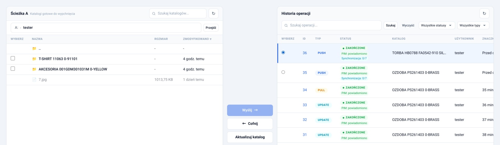
Rys. 13. Wybrana operacja PUSH #36 (TORBA). Kółko wyboru jest tylko przy wysłaniach, które się zakończyły i nie zostały jeszcze cofnięte.
Kliknij ← Cofnij. Okno potwierdzenia pokazuje numer operacji i dokładne miejsce, do którego wróci katalog: A:/tester/TORBA HB0788 FA0542-910 SILVER.
„Skopiowanie z PATH_B z powrotem do…” = katalog wraca do Ścieżki A.
„Usunięcie z PATH_B” = katalog znika z miejsca docelowego.
Kliknij Potwierdź. Pojawi się komunikat „Operacja cofania rozpoczęta”.
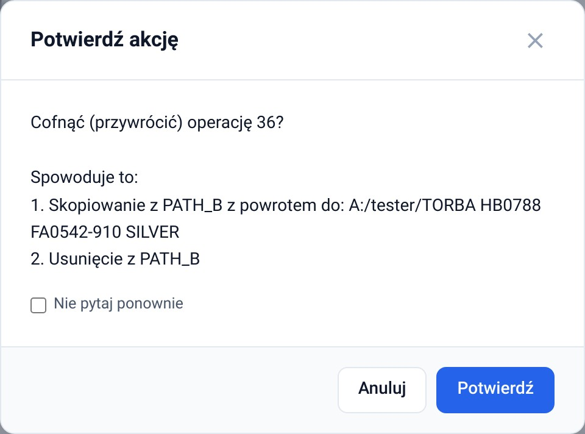
Rys. 14. Potwierdzenie cofnięcia
Efekt
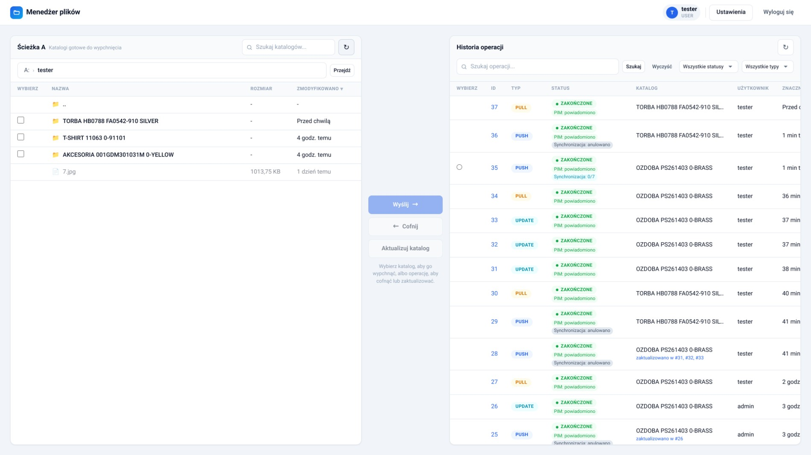
Rys. 15. Po cofnięciu: TORBA jest z powrotem w A:/tester, w historii jest PULL #37. Przy PUSH #36 nie ma już kółka wyboru, synchronizacja ma stan „anulowano”, a przyciski „Cofnij” i „Aktualizuj katalog” znów są nieaktywne.
Katalog wraca w to samo miejsce, z którego został wysłany, ze wszystkimi plikami (tu: 7 zdjęć).
PIM dostaje powiadomienie o wycofaniu katalogu (PIM: powiadomiono przy PULL).
Sprawdzanie serwera zdjęć dla tego wysłania zostaje zakończone (Synchronizacja: anulowano).
Tego wysłania nie można już cofnąć ani aktualizować. Aby wysłać katalog ponownie, zaznacz go w Ścieżce A i kliknij Wyślij – powstanie nowa operacja PUSH.
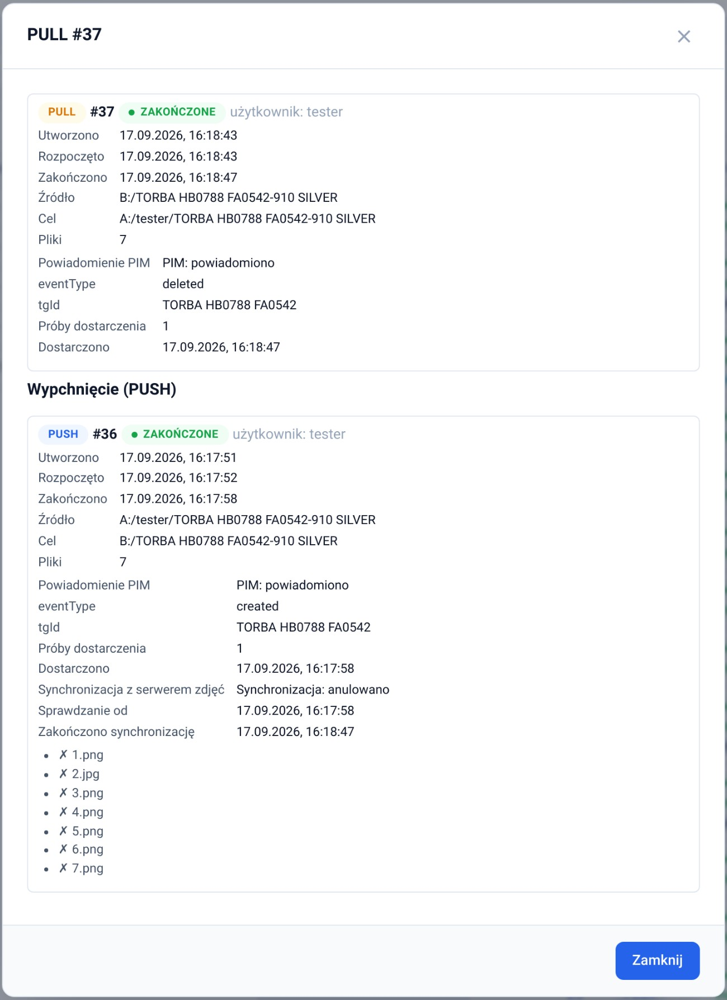
Rys. 16. Szczegóły PULL #37 (kliknij numer operacji w historii): skąd i dokąd przeniesiono katalog oraz powiązane wysłanie PUSH #36
7Aktualizacja wysłanego katalogu – UPDATE
Aktualizacja pozwala poprawić katalog, który już jest w miejscu docelowym – bez cofania go i wysyłania od nowa. Przykłady w tym rozdziale dotyczą katalogu OZDOBA PS261403 0-BRASS (wysłanie PUSH #35).
Opcja
Co robi
Skąd nowy plik
Zmień nazwę
Nadaje plikowi nową nazwę, np. 6.png → 8.png.
–
Usuń
Usuwa plik z katalogu.
–
Zastąp
Podmienia zawartość pliku; nazwa zostaje ta sama.
Ścieżka A lub Twój komputer
Dodaj pliki
Dokłada nowe pliki do katalogu.
Ścieżka A lub Twój komputer
W jednej aktualizacji możesz połączyć dowolnie wiele zmian. Pokażemy trzy aktualizacje, które razem wykorzystują wszystkie opcje i oba źródła plików:
Operacja
Źródło plików
Zmiany
UPDATE #38
Ścieżka A
Dodaj 7.jpg ze Ścieżki A · Zmień nazwę 6.png → 8.png
UPDATE #39
Komputer (przesłanie)
Zastąp 7.jpg plikiem z komputera · Dodaj 10.jpg z komputera · Zmień nazwę 8.png → 6.png
UPDATE #40
Ścieżka A
Zastąp 10.jpg plikiem ze Ścieżki A · Usuń 7.jpg
7.1 Otwieranie okna aktualizacji
W Historii operacji zaznacz kółko przy operacji PUSH katalogu, który chcesz zmienić (status „Zakończone”, jeszcze niecofnięty).
Kliknij Aktualizuj katalog.
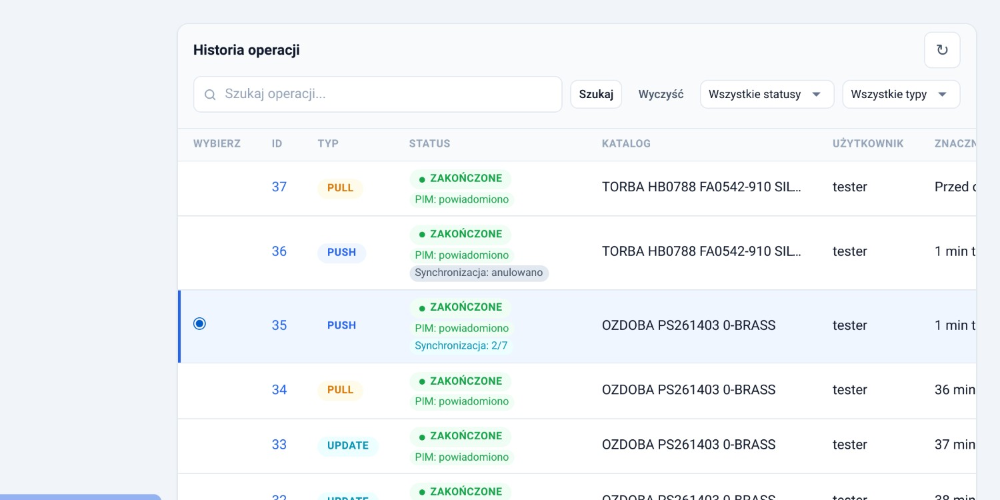
Rys. 17. Wybrane wysłanie PUSH #35 (OZDOBA) – przyciski „Cofnij” i „Aktualizuj katalog” są aktywne
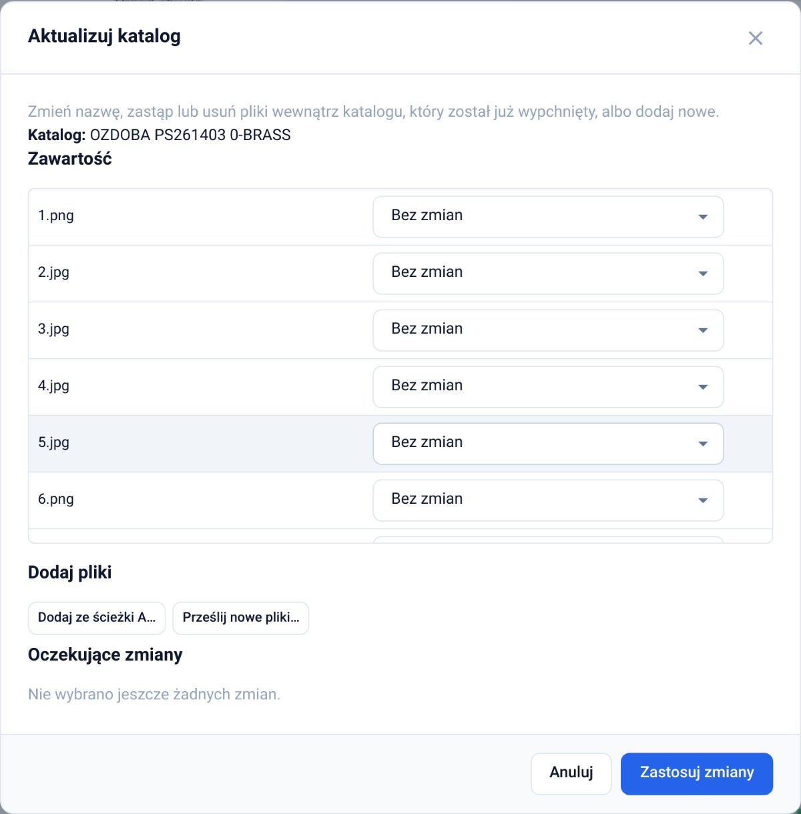
Rys. 18. Okno „Aktualizuj katalog”
Okno ma trzy części:
Zawartość – wszystkie pliki katalogu w miejscu docelowym. Przy każdym jest lista wyboru: Bez zmian, Zmień nazwę, Zastąp, Usuń. (Przy podfolderze – oznaczonym znakiem „/” – nie ma opcji „Zastąp”).
Dodaj pliki – przyciski Dodaj ze ścieżki A… i Prześlij nowe pliki….
Oczekujące zmiany – podsumowanie wszystkiego, co wybrałeś. Na razie nic nie jest zmieniane.
Zmiany zostaną wprowadzone dopiero po kliknięciu Zastosuj zmiany i potwierdzeniu.
AnulowanieAnuluj lub × zamyka okno bez zmian. Jeśli coś już wybrałeś, aplikacja zapyta: „Odrzucić niezastosowane zmiany i przesłane pliki?”.
7.2 Sposób 1: pliki ze Ścieżki A UPDATE #38
Używaj, gdy nowe zdjęcie leży już w folderze sieciowym (Ścieżce A). W przykładzie dodajemy plik A:/tester/7.jpg jako 7.jpg i zmieniamy nazwę 6.png na 8.png.
Zmiana nazwy
Przy pliku 6.png wybierz z listy Zmień nazwę.
Obok pojawi się pole – wpisz nową nazwę 8.png (pamiętaj: numer + rozszerzenie).
Dodanie pliku ze Ścieżki A
Kliknij Dodaj ze ścieżki A…. Otworzy się okno „Wybierz pliki ze ścieżki A” pokazujące folder, w którym jesteś w panelu Ścieżka A.
Niebieskie nazwy to foldery – kliknij, aby wejść; .. cofa o poziom. Zaznacz pola przy plikach, które chcesz dodać (możesz kilka).
Kliknij Wybierz (przy kilku plikach: „Wybierz pliki (N)”).
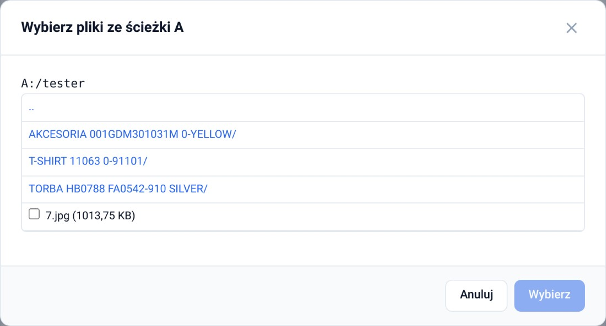
Rys. 19. Okno wyboru – nic jeszcze nie zaznaczono, „Wybierz” jest nieaktywny
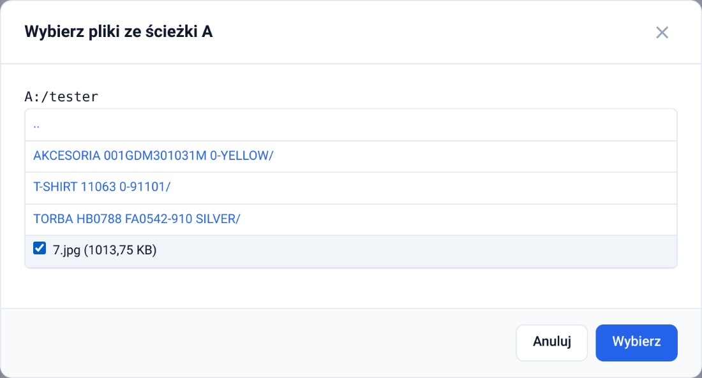
Rys. 20. Zaznaczony plik 7.jpg
Plik pojawi się w części Dodaj pliki:
pole z nazwą – pod taką nazwą plik znajdzie się w katalogu; możesz ją zmienić,
skąd pochodzi – tu A:/tester/7.jpg,
Usuń ze ścieżki A po aktualizacji – zaznacz, jeśli plik źródłowy ma zniknąć ze Ścieżki A po udanej aktualizacji (w przykładzie nie zaznaczamy),
× – rezygnacja z dodania tego pliku.
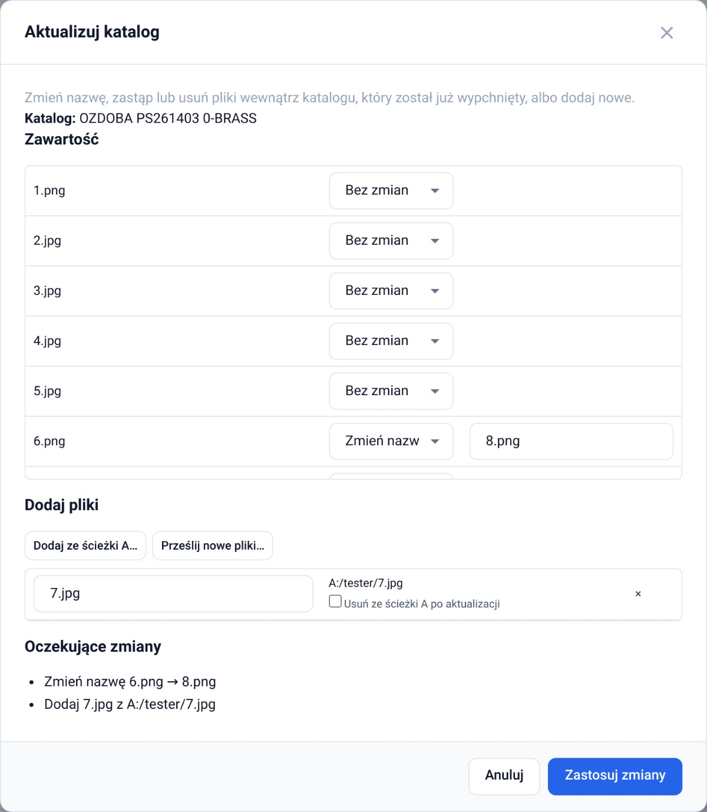
Rys. 21. Gotowy zestaw zmian: zmiana nazwy 6.png → 8.png oraz dodanie 7.jpg ze Ścieżki A. Obie zmiany widać w „Oczekujących zmianach”.
Kliknij Zastosuj zmiany. Pojawi się potwierdzenie z listą zmian.
Kliknij Potwierdź. Zobaczysz komunikat „Katalog „OZDOBA PS261403 0-BRASS” został zaktualizowany”.
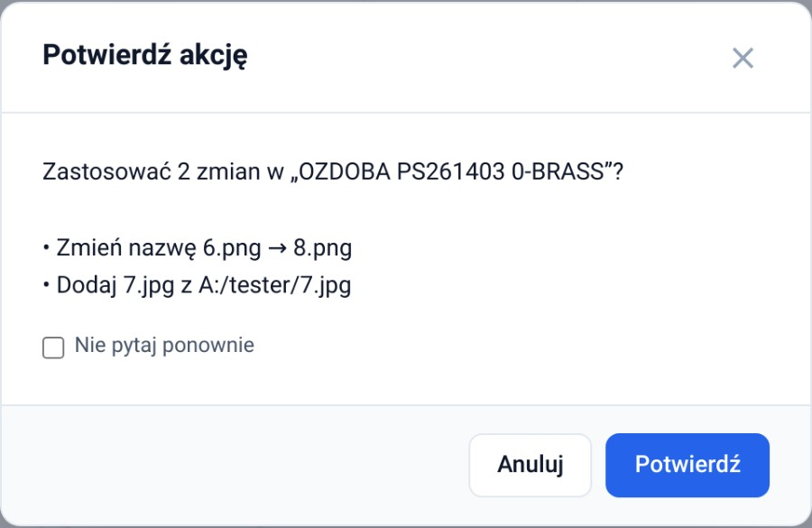
Rys. 22. Potwierdzenie aktualizacji #38
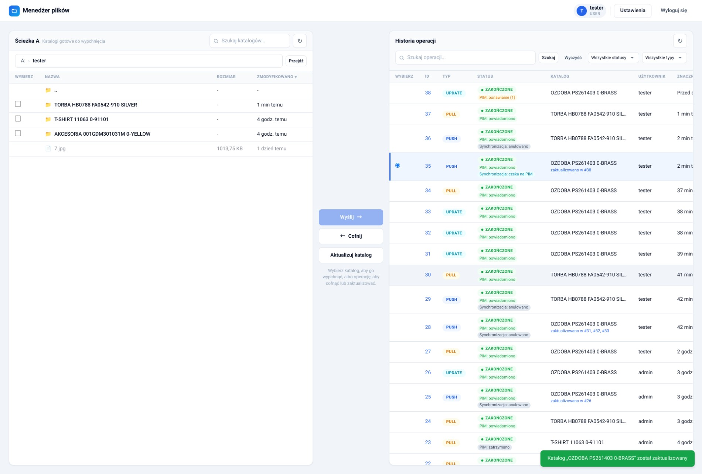
Rys. 23. W historii pojawiła się operacja UPDATE #38, a przy wysłaniu PUSH #35 dopisek „zaktualizowano w #38” (klik otwiera szczegóły)
7.3 Sposób 2: pliki z komputera UPDATE #39
Używaj, gdy nowe zdjęcie masz na swoim komputerze (np. w Pobranych). Pliki są najpierw przesyłane do aplikacji, a trafiają do katalogu dopiero po zastosowaniu zmian. W przykładzie: zastępujemy 7.jpg plikiem zamiennik.jpg, dodajemy plik nowe-zdjecie.jpg jako 10.jpg (bo 9.jpg już jest w katalogu) i przywracamy nazwę 8.png → 6.png.
Zastąpienie pliku plikiem z komputera
Ponownie otwórz okno aktualizacji (wybierz PUSH #35 → Aktualizuj katalog). Lista zawartości pokazuje już stan po poprzedniej aktualizacji.
Przy 7.jpg wybierz Zastąp. Pojawią się dwa przyciski:
Ze ścieżki A… – plik z folderu sieciowego (punkt 7.4),
Prześlij… – plik z Twojego komputera.
Kliknij Prześlij… i wskaż plik w oknie Windows.
Obok pojawi się postęp „Przesyłanie zamiennik.jpg… 45%”, a po chwili „Przesłano: zamiennik.jpg (25.7 KB)”.
Ten sam formatPlik zastępujący powinien mieć ten sam format co zastępowany (np. .jpg zastępuj zdjęciem JPG) – nazwa pliku w katalogu się nie zmienia. Aby zmienić format, usuń stary plik i dodaj nowy.
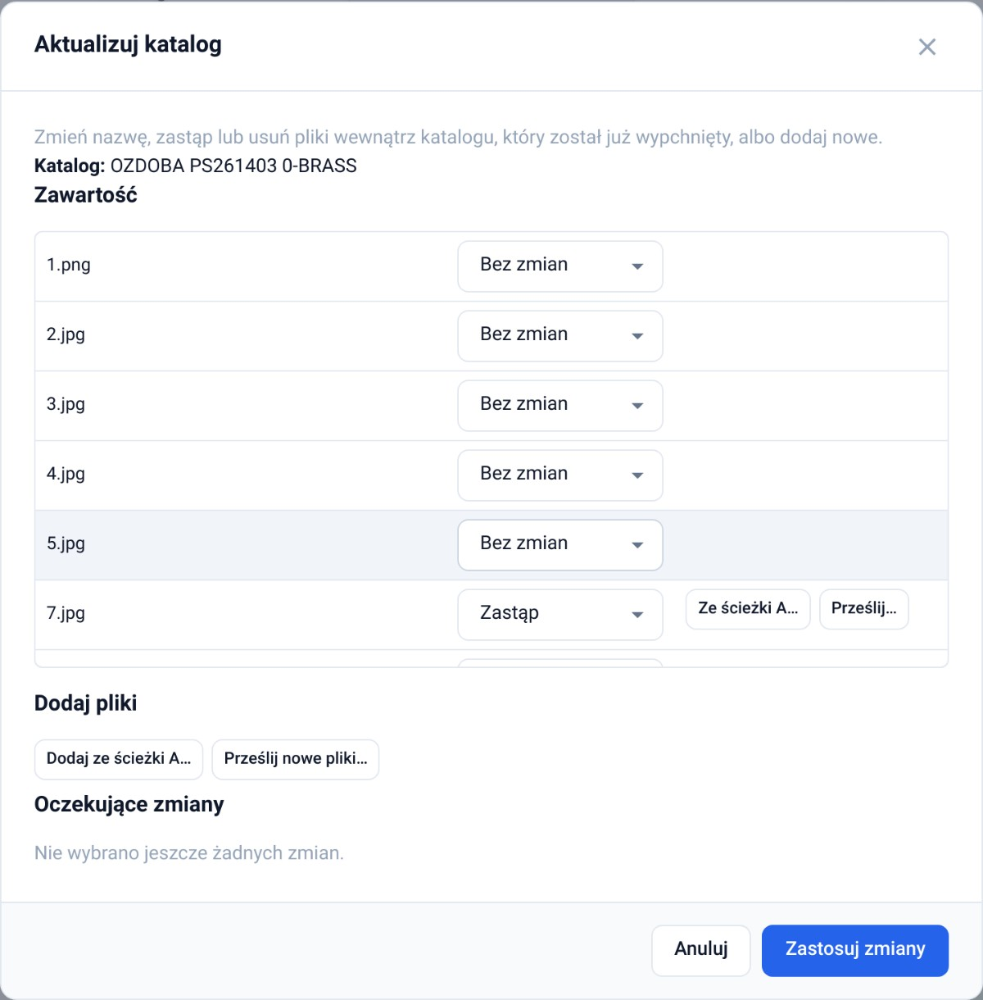
Rys. 24. Opcja „Zastąp” – wybór źródła nowego pliku
Dodanie plików z komputera
Kliknij Prześlij nowe pliki… i wskaż plik (możesz zaznaczyć kilka naraz).
Plik pojawi się w części Dodaj pliki z oryginalną nazwą – tu nowe-zdjecie.jpg.
Zmień nazwę w polu na numerową – tu 10.jpg. Z nazwą nowe-zdjecie.jpg aktualizacja zostałaby odrzucona (rozdział 2, zasada 3).
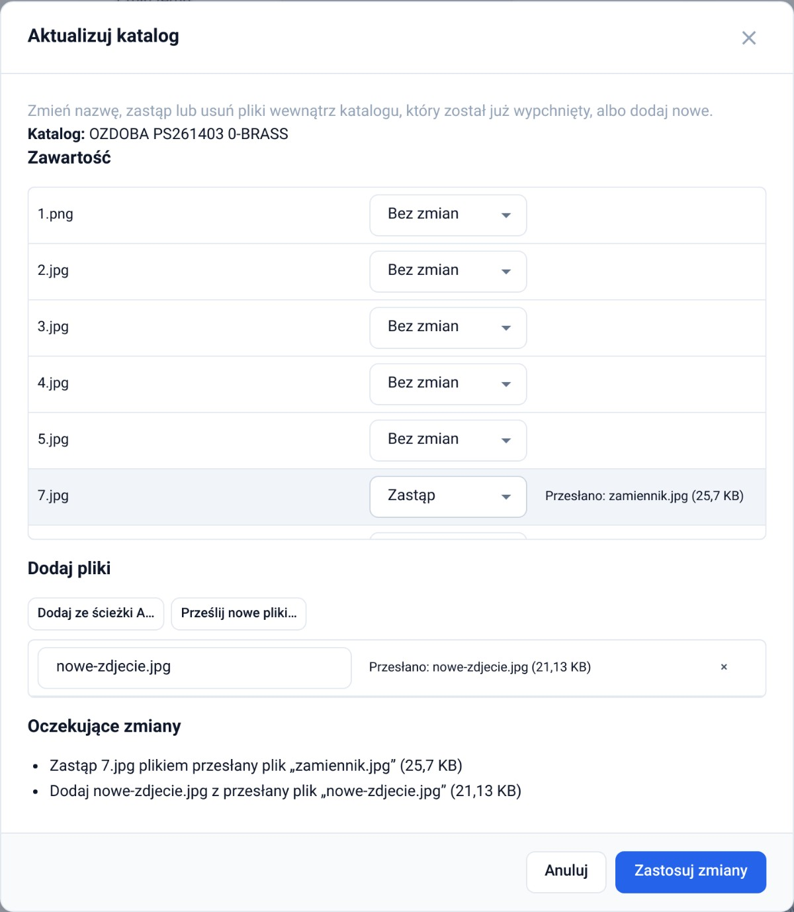
Rys. 25. Oba pliki przesłane. Dodawany plik ma jeszcze oryginalną nazwę – trzeba ją zmienić.Rys. 26. Gotowe: nazwa zmieniona na 10.jpg, dodatkowo zmiana nazwy 8.png → 6.png
Kliknij Zastosuj zmiany. Potwierdzenie zawiera ostrzeżenie „Zastąpionych plików (1) nie będzie można przywrócić.” – poprzednia wersja 7.jpg przepadnie.
Kliknij Potwierdź.
Ważne przy przesyłaniu
Poczekaj, aż wszystkie pliki się prześlą – inaczej zobaczysz „Poczekaj, aż wszystkie pliki zostaną przesłane”.
Jeden plik może mieć najwyżej 200 MB.
Przesłane, ale niezastosowane pliki są odrzucane po zamknięciu okna.
Opcja „Usuń ze ścieżki A po aktualizacji” nie dotyczy plików z komputera.
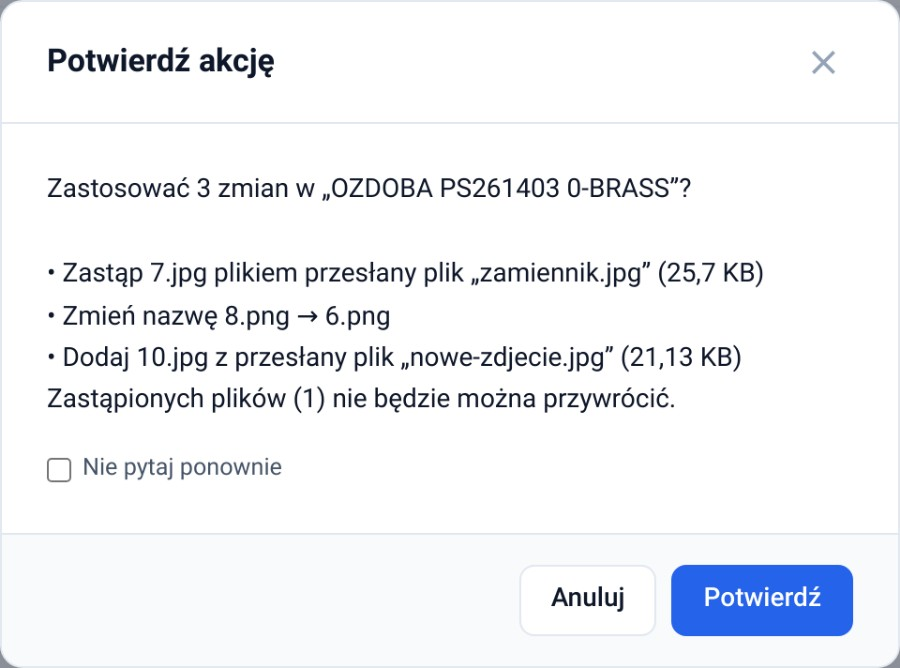
Rys. 27. Potwierdzenie aktualizacji #39 z ostrzeżeniem o zastąpieniu
7.4 Zastąpienie plikiem ze Ścieżki A i usuwanie pliku UPDATE #40
W przykładzie zastępujemy 10.jpg plikiem A:/tester/7.jpg i usuwamy z katalogu plik 7.jpg.
Zastąpienie plikiem ze Ścieżki A
Przy 10.jpg wybierz Zastąp i kliknij Ze ścieżki A….
W oknie „Wybierz plik ze ścieżki A” można zaznaczyć tylko jeden plik (okrągłe pole). Zaznacz 7.jpg i kliknij Wybierz.
W wierszu pojawi się ścieżka pliku i pole Usuń ze ścieżki A po aktualizacji.
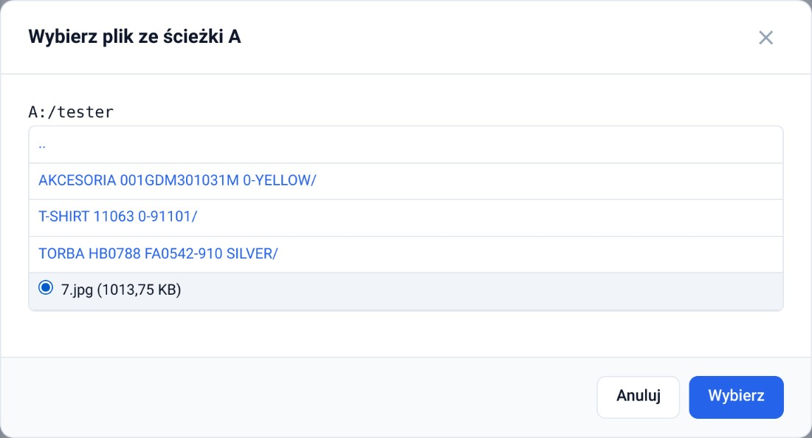
Rys. 28. Wybór jednego pliku do zastąpienia
Usunięcie pliku
Przy 7.jpg wybierz Usuń. W „Oczekujących zmianach” pojawi się „Usuń 7.jpg”.
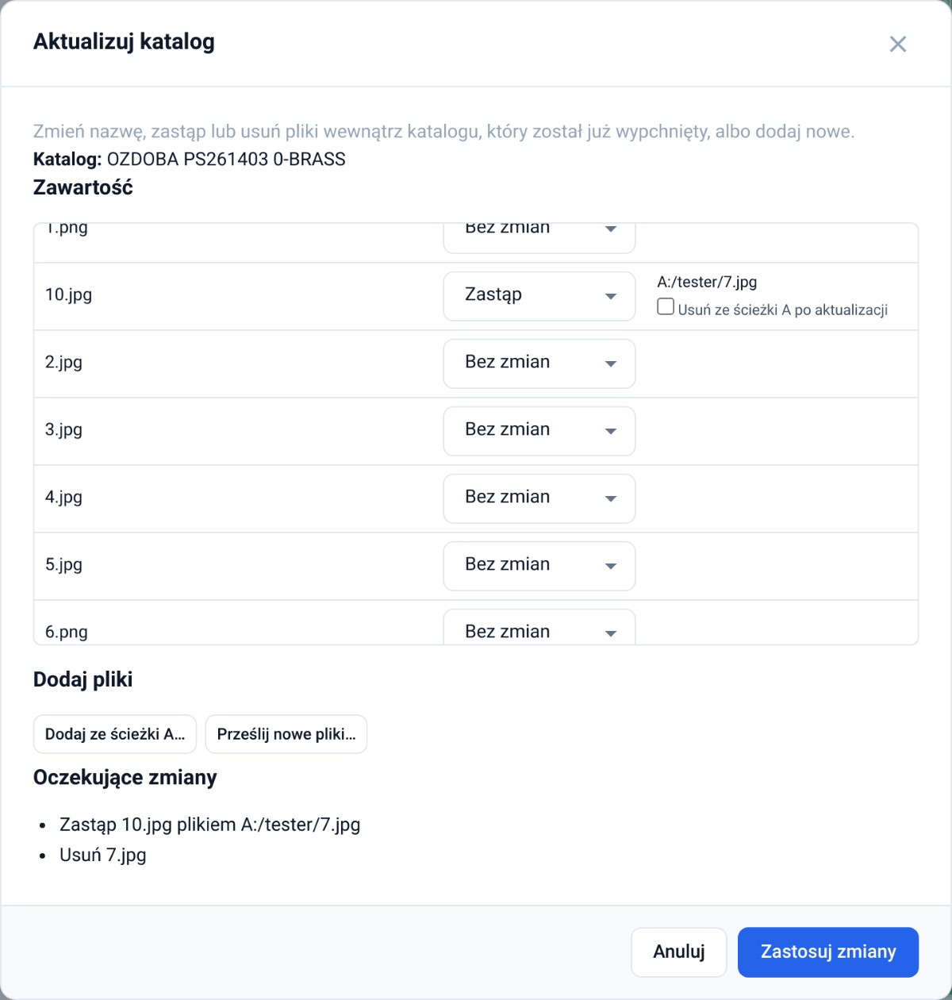
Rys. 29. Zestaw zmian #40
Kliknij Zastosuj zmiany. Potwierdzenie ostrzega o obu nieodwracalnych zmianach: „1 usunięć nie będzie można cofnąć.” oraz „Zastąpionych plików (1) nie będzie można przywrócić.”
Kliknij Potwierdź.
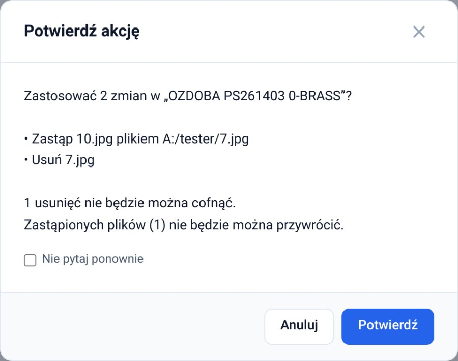
Rys. 30. Potwierdzenie zmian nieodwracalnych
Usunięcia i zastąpienia są nieodwracalneUsunięty lub zastąpiony plik nie trafia do żadnego kosza. Nawet Cofnij (PULL) go nie przywróci – PULL zwraca katalog w obecnej postaci (rozdział 8). Jeśli możesz potrzebować starego zdjęcia, zachowaj jego kopię przed aktualizacją.
7.5 Ściąga: wszystkie opcje aktualizacji
Chcę…
Co kliknąć
Czy można odwrócić?
Przykład z testów
zmienić nazwę pliku
przy pliku: Zmień nazwę → wpisz nazwę
tak – kolejną zmianą nazwy
#38: 6.png → 8.png; #39: 8.png → 6.png
usunąć plik
przy pliku: Usuń
nie
#40: Usuń 7.jpg
podmienić zdjęcie z komputera
przy pliku: Zastąp → Prześlij…
nie (stara wersja przepada)
#39: Zastąp 7.jpg plikiem „zamiennik.jpg”
podmienić zdjęcie ze Ścieżki A
przy pliku: Zastąp → Ze ścieżki A…
nie (stara wersja przepada)
#40: Zastąp 10.jpg plikiem A:/tester/7.jpg
dodać zdjęcie z komputera
Prześlij nowe pliki… → popraw nazwę
tak – usuwając je później
#39: Dodaj 10.jpg („nowe-zdjecie.jpg”)
dodać zdjęcie ze Ścieżki A
Dodaj ze ścieżki A… → zaznacz → Wybierz
tak – usuwając je później
#38: Dodaj 7.jpg z A:/tester/7.jpg
Co aplikacja sprawdza przy aktualizacji
Zasady z rozdziału 2 dotyczą stanu katalogu po zmianach. Nie usuniesz np. zdjęć tak, by zostało mniej niż 2 („Po tych zmianach folder zawierałby X plików graficznych…”). Aktualizacja, która naprawia wcześniejszy problem, przejdzie.
Nazwy nie mogą się powtarzać: „„7.jpg” występowałby w katalogu dwukrotnie. Wybierz inną nazwę.”. Aby podmienić istniejący plik, użyj Zastąp, a nie „Dodaj”.
Nowe pliki są sprawdzane przed wprowadzeniem zmian. Jeśli któryś nie jest prawdziwym zdjęciem, zobaczysz np. „Nowy plik dla 7.jpg nie jest w rzeczywistości obrazem… Niczego nie zmieniono.”.
Jeśli przy „Zmień nazwę” nie wpiszesz nazwy albo przy „Zastąp” nie wybierzesz pliku, zmiany nie zostaną zastosowane – aplikacja napisze, czego brakuje.
Jeśli aktualizacja się nie udaGdy wystąpi błąd w trakcie, aplikacja wycofuje już wprowadzone zmiany, a operacja ma status Nieudane. Katalog zostaje taki jak przed aktualizacją. Przesłane pliki trzeba wtedy wybrać ponownie.
Po każdej udanej aktualizacjiPIM dostaje powiadomienie o zmianie katalogu. W historii przy wysłaniu PUSH pojawia się dopisek „zaktualizowano w #…”.
8Cofanie katalogu po aktualizacji – PULL
Przykład: cofamy katalog OZDOBA PS261403 0-BRASS (PUSH #35), który po wysłaniu był trzykrotnie aktualizowany (#38, #39, #40).
Najważniejsza różnicaCofnięcie zwraca do Ścieżki A katalog w obecnej, zaktualizowanej postaci – nie w takiej, w jakiej był pierwotnie wysłany. Usunięte i zastąpione pliki nie wrócą.
W historii zaznacz kółko przy PUSH #35. Dopisek „zaktualizowano w #38, #39, #40” informuje, że katalog był zmieniany.
Rys. 31. Wybrane wysłanie #35 z trzema aktualizacjami
Kliknij ← Cofnij. Pojawi się inne okno niż zwykle – z ostrzeżeniem: „Ten katalog został zmieniony po wypchnięciu przez UPDATE #38, #39, #40. PULL przywraca OBECNĄ, zaktualizowaną wersję – nie pliki w postaci, w jakiej zostały pierwotnie wypchnięte.”
Kliknij Potwierdź.
To ostrzeżenie ma osobny przełącznik w Ustawieniach („Ostrzegaj przy cofaniu zaktualizowanego katalogu”).
Rys. 35. Szczegóły PULL #41: „Przywrócono katalog razem z aktualizacjami #38, #39, #40.” Poniżej pełna historia: wysłanie #35 i wszystkie aktualizacje z listą zmian.
9Praca w aplikacji – wszystkie opcje dokładnie
9.1 Górny pasek
Element
Opis
Inicjały, nazwa i rola
Kto jest zalogowany (np. tester, rola USER).
Panel administracyjny
Widoczny tylko dla administratorów.
Ustawienia
Wygląd, język, zapamiętywanie folderu, potwierdzenia – punkt 9.7.
Wyloguj się
Kończy sesję i wraca do ekranu logowania.
9.2 Panel „Ścieżka A”
Poruszanie się po folderach
Kliknięcie nazwy folderu – otwiera go.
.. (pierwszy wiersz) – przejście poziom wyżej.
Pasek ścieżki pokazuje drogę, np. A: › tester. Kliknięcie części ścieżki (np. A:) przenosi do tego folderu.
Wpisanie ścieżki: kliknij puste miejsce paska, wpisz ścieżkę zaczynającą się od A: (np. A:/tester) i naciśnij Enter lub Przejdź. Inne litery dysków są niedozwolone – pojawi się błąd.
↻ – ręczne odświeżenie. Lista i tak odświeża się sama co kilka sekund, więc zmiany zrobione w Eksploratorze Windows pojawią się bez klikania.
Foldery mają rozmiar „-”. Pliki są wyszarzone i nie mają pola wyboru – wysyła się całe katalogi.
Czas modyfikacji jest pokazywany względnie: Przed chwilą, 5 min temu, 4 godz. temu, 1 dzień temu, 3 dni temu. Starsze niż tydzień pokazują datę i godzinę, np. 30 mar 2026, 13:06.
Przy dużej liczbie pozycji na dole pojawia się Załaduj więcej.
Wyszukiwanie
Wpisz fragment nazwy w polu Szukaj katalogów… – po krótkiej chwili (albo po Enter) lista pokaże tylko pasujące pozycje z bieżącego folderu. Wyniki są widoczne, dopóki kursor jest w polu wyszukiwania – po kliknięciu w inne miejsce lista po kilku sekundach wraca do pełnej zawartości folderu (zaznaczenia zostają). Aby od razu wrócić do pełnej listy, wyczyść pole.
Zaznaczanie
Pole wyboru lub kliknięcie wiersza poza nazwą zaznacza katalog. Zaznaczenie zostaje po automatycznym odświeżeniu listy.
Menu prawego przycisku (w aplikacji)
Prawy przycisk na wierszu folderu pokazuje menu:
Otwórz – otwiera folder,
Wyślij > – wysyła tylko ten folder (inne zaznaczenia są usuwane). Pojawia się to samo okno potwierdzenia co po kliknięciu Wyślij →.
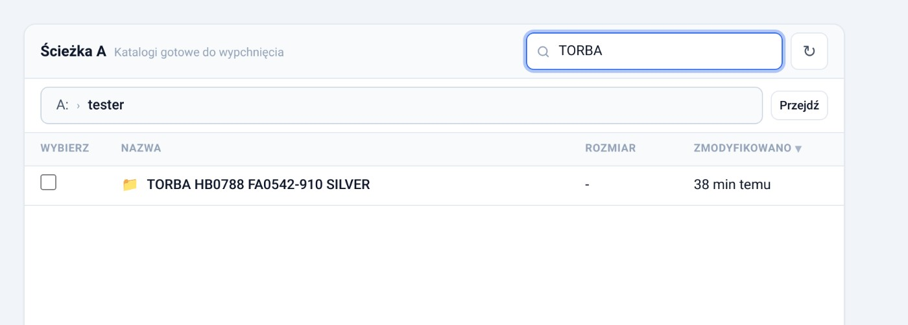
Rys. 36. Wyszukiwanie „TORBA” w A:/tester
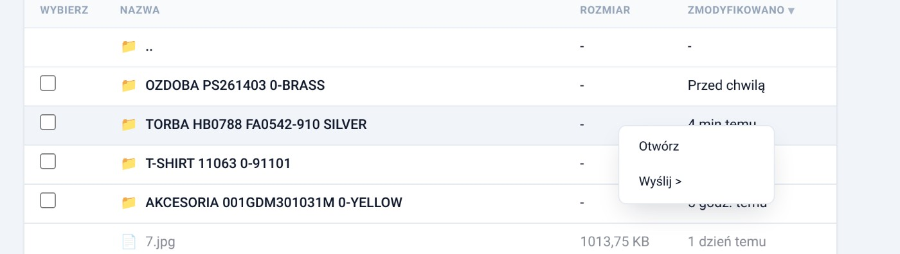
Rys. 37. Menu prawego przycisku na folderze TORBA
9.3 Przyciski środkowe
Przycisk
Aktywny, gdy…
Wyślij →
w Ścieżce A zaznaczono co najmniej jeden katalog. Uruchamia PUSH (rozdział 5).
← Cofnij
w historii wybrano operację PUSH. Uruchamia PULL (rozdziały 6 i 8).
Aktualizuj katalog
w historii wybrano zakończoną operację PUSH. Otwiera okno UPDATE (rozdział 7).
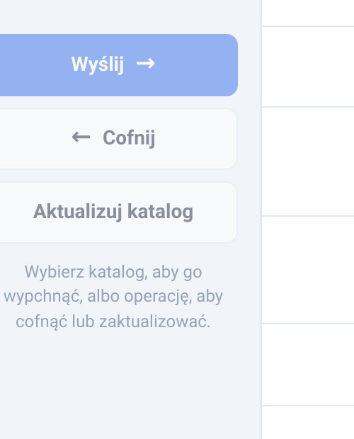
Rys. 38. Przyciski i podpowiedź pod nimi
Przyciski same stają się nieaktywne, gdy zaznaczenie zniknie – np. po wysłaniu katalogu, przejściu do innego folderu albo po cofnięciu wybranej operacji.
9.4 Historia operacji
Pokazuje operacje wszystkich użytkowników, od najnowszych. Odświeża się sama – nowe operacje i zmiany statusów pojawiają się bez klikania.
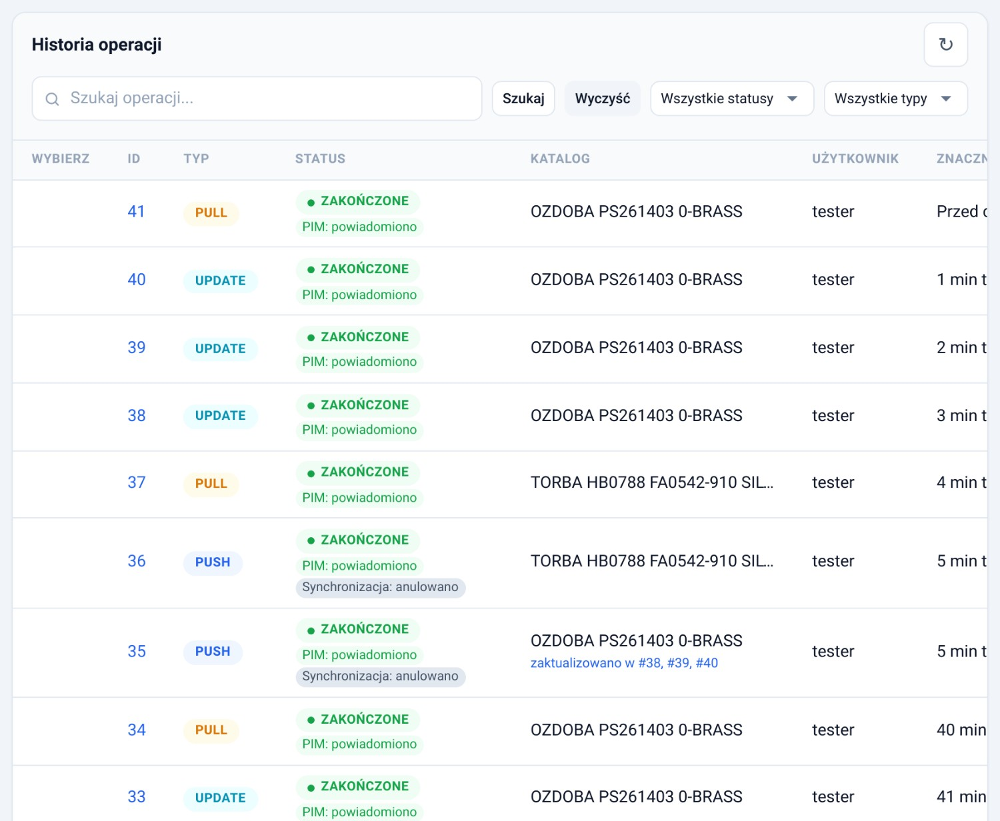
Rys. 39. Historia operacji
Kolumna
Opis
Wybierz
Kółko wyboru – tylko przy PUSH ze statusem „Zakończone”, jeszcze niecofniętych. Wybraną operację można cofnąć lub zaktualizować. Operacji PULL i UPDATE nie wybiera się.
ID
Numer operacji. Kliknięcie otwiera Szczegóły operacji (punkt 9.6).
Oczekujące (czeka na wykonanie) · W toku · Zakończone · Nieudane (błąd – szczegóły po kliknięciu ID) · Wycofano. Pod statusem są znaczki PIM i synchronizacji (punkt 9.5).
Katalog
Nazwa katalogu (najedź kursorem, aby zobaczyć pełną ścieżkę). Dopisek zaktualizowano w #… przy PUSH – kliknięcie otwiera historię tego katalogu.
Użytkownik
Kto wykonał operację.
Znacznik czasu
Kiedy operację utworzono: Przed chwilą, 5 min temu, 2 godz. temu, 1 dzień temu, 3 dni temu; starsze – data i godzina. Najedź kursorem, aby zobaczyć dokładną datę i godzinę (np. 17.09.2026, 16:22:18). Na mniejszych ekranach tę kolumnę widać po przewinięciu tabeli w prawo.
Wyszukiwanie, filtry, sortowanie
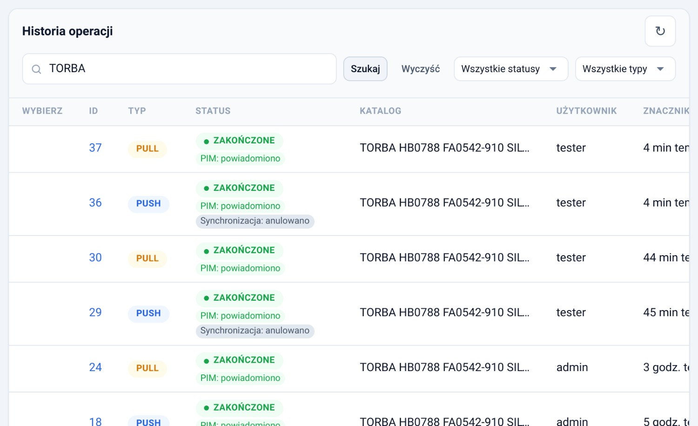
Rys. 40. Wyszukanie „TORBA”
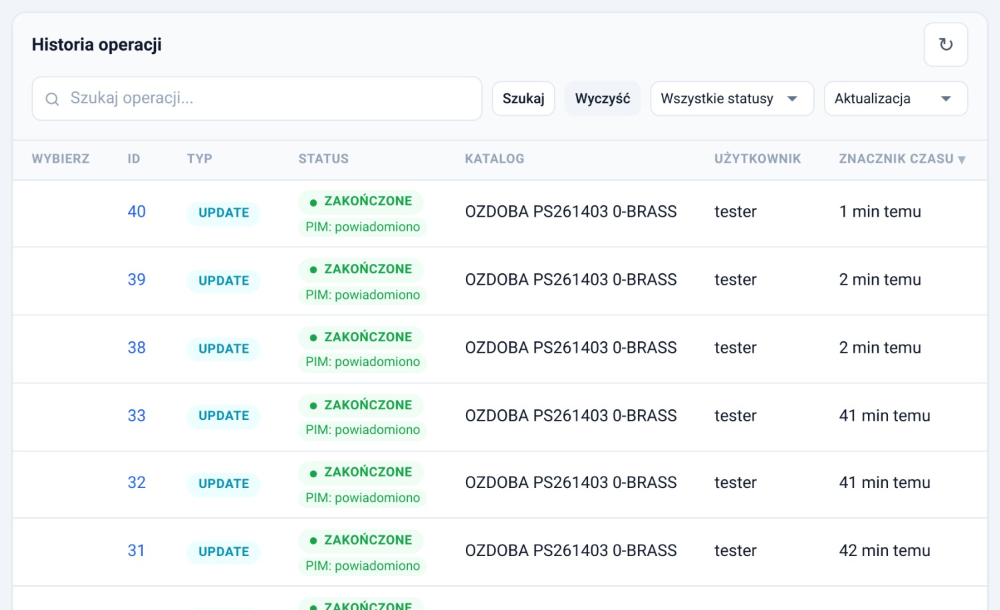
Rys. 41. Filtr typu „Aktualizacja”
Szukaj operacji… – wpisz np. nazwę katalogu i kliknij Szukaj lub Enter. Wyczyść wraca do pełnej listy.
Wszystkie statusy – pokaż tylko: Oczekujące, W toku, Zakończone lub Nieudane.
Wszystkie typy – pokaż tylko: Wyślij (PUSH), Cofnij (PULL) lub Aktualizacja (UPDATE).
Filtry i wyszukiwanie można łączyć. Kliknięcie nagłówka kolumny sortuje listę.
↻ odświeża listę; Załaduj więcej (na dole) pokazuje starsze operacje.
9.5 Znaczki PIM i synchronizacji
Pod statusem operacji mogą być dwa rodzaje znaczków. Najechanie kursorem pokazuje szczegóły (liczbę prób, godzinę dostarczenia, brakujące pliki, ostatni błąd).
Powiadomienie PIM (przy PUSH, UPDATE i PULL)
Znaczek
Znaczenie
Co robić
PIM: wysyłanie
Powiadomienie jest właśnie wysyłane.
Poczekać.
PIM: ponawianie (N)
PIM nie przyjął powiadomienia; aplikacja sama ponawia próby (N = liczba prób, ponawianie nawet do 72 godzin).
Zwykle poczekać. Gdy trwa długo – zgłosić.
PIM: powiadomiono
PIM potwierdził odbiór.
Nic.
PIM: błąd
Nie udało się dostarczyć powiadomienia.
Szczegóły → „Wyślij ponownie do PIM” lub zgłosić.
PIM: zatrzymano
Ktoś ręcznie zatrzymał wysyłanie.
Można wysłać ponownie ze szczegółów.
Synchronizacja z serwerem zdjęć (tylko przy PUSH)
Znaczek
Znaczenie
Synchronizacja: czeka na PIM
Sprawdzanie ruszy po powiadomieniu PIM.
Synchronizacja: 2/7
Trwa sprawdzanie; na serwerze zdjęć sklepu jest już 2 z 7 plików.
Zsynchronizowano 7/7
Wszystkie zdjęcia są dostępne na serwerze zdjęć.
Synchronizacja: przekroczono czas 3/7
Po 3 godzinach nie wszystkie zdjęcia się pojawiły. Można sprawdzić ponownie ze szczegółów.
Synchronizacja: anulowano
Sprawdzanie zakończone, bo katalog został cofnięty (PULL).
Synchronizacja: zatrzymano 0/7
Ktoś ręcznie zatrzymał sprawdzanie.
9.6 Okno szczegółów operacji
Otwierasz je, klikając numer (ID) operacji albo dopisek „zaktualizowano w #…”. Pokazuje:
kto i kiedy (Utworzono, Rozpoczęto, Zakończono),
Źródło i Cel – skąd i dokąd (A: = Ścieżka A, B: = miejsce docelowe),
Pliki – liczba plików; przy błędzie – pole Błąd,
dane powiadomienia PIM (eventType: created = wysłanie, updated = aktualizacja, deleted = cofnięcie; liczba prób, godzina dostarczenia),
stan synchronizacji z listą plików: ✓ jest na serwerze zdjęć, ✗ jeszcze nie ma,
Powiadomienie nie zostanie wysłane ani ponowione (z potwierdzeniem).
Wyślij ponownie do PIM
Wysyła powiadomienie jeszcze raz.
Zatrzymaj sprawdzanie serwera obrazów
Kończy sprawdzanie (z potwierdzeniem).
Sprawdź ponownie serwer zdjęć
Wznawia sprawdzanie.
Okno zamyka przycisk Zamknij lub ×.
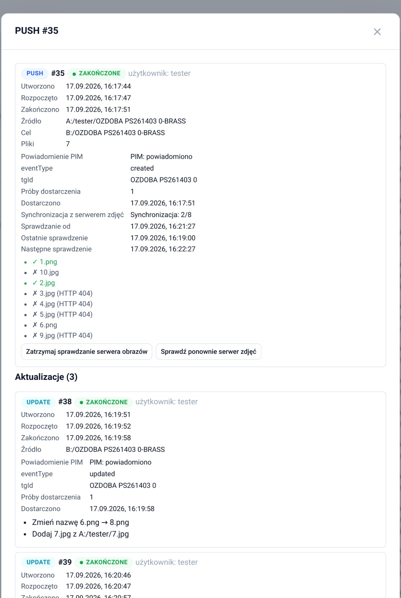
Rys. 42. Szczegóły PUSH #35 w trakcie synchronizacji – na dole widoczne przyciski sprawdzania serwera
9.7 Ustawienia
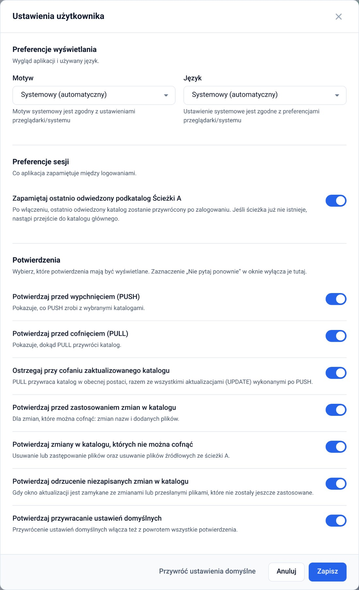
Rys. 43. Okno „Ustawienia użytkownika”
Ustawienia są zapisane na Twoim koncie – działają na każdym komputerze.
Preferencje wyświetlania
Motyw: Systemowy (automatyczny) / Jasny / Ciemny.
Język: Systemowy (automatyczny) / Angielski / Polski.
Preferencje sesji
Zapamiętaj ostatnio odwiedzony podkatalog Ścieżki A – po zalogowaniu otworzy się ostatni folder (domyślnie włączone).
Potwierdzenia
Przełącznik włączony = okno pytania jest pokazywane. Wyłączają się też same, gdy zaznaczysz „Nie pytaj ponownie”.
Potwierdzaj przed wypchnięciem (PUSH)
Potwierdzaj przed cofnięciem (PULL)
Ostrzegaj przy cofaniu zaktualizowanego katalogu
Potwierdzaj przed zastosowaniem zmian w katalogu (zmiany nazw, dodane pliki)
Potwierdzaj zmiany w katalogu, których nie można cofnąć (usuwanie, zastępowanie, usuwanie plików ze Ścieżki A)
Potwierdzaj odrzucenie niezapisanych zmian w katalogu
Potwierdzaj przywracanie ustawień domyślnych
ZalecenieNie wyłączaj potwierdzeń PUSH, PULL i zmian nieodwracalnych. Po ich wyłączeniu operacja rusza od razu po kliknięciu przycisku (także z menu Windows „Wyślij zaznaczone przez RFM”).
Zapisz zapisuje zmiany · Anuluj zamyka bez zmian · Przywróć ustawienia domyślne przywraca wszystko, w tym włącza wszystkie potwierdzenia.
9.8 Komunikaty
Krótkie komunikaty pojawiają się na kilka sekund w prawym dolnym rogu ekranu:
zielone – sukces, np. „Rozpoczęto wysyłanie dla 2 katalogów”, „Operacja cofania rozpoczęta”, „Katalog „…” został zaktualizowany”, „Ustawienia zapisane pomyślnie”,
czerwone – błąd lub ostrzeżenie, np. „Operacja wysyłania nie powiodła się: …”, „Katalog „…” został zaktualizowany, z ostrzeżeniami: …”.
Odmowy z powodu zasad katalogu nie znikają same – pokazują się w oknie „Nie można kontynuować”, które zamykasz przyciskiem Zamknij.
10Problemy i pytania
Sytuacja
Rozwiązanie
Przycisk Wyślij jest szary.
Zaznacz pole wyboru przy katalogu. Pliki nie mają pól wyboru – wysyła się całe foldery.
Przy operacji w historii nie ma kółka wyboru.
Kółko jest tylko przy PUSH ze statusem „Zakończone”, które nie zostały cofnięte. Operacji PULL i UPDATE nie wybiera się – do aktualizacji wybierz PUSH danego katalogu.
Katalog zniknął ze Ścieżki A.
Tak działa wysłanie (PUSH). Aby go odzyskać – Cofnij w historii.
Po cofnięciu brakuje zdjęcia, które kiedyś było w katalogu.
Zostało usunięte lub zastąpione w aktualizacji. PULL zwraca obecny stan katalogu (rozdział 8). Sprawdź listę zmian w szczegółach PUSH.
„Nie można kontynuować”.
Katalog nie spełnia zasad – przeczytaj powód w oknie i porównaj z rozdziałem 2.
„Poczekaj, aż wszystkie pliki zostaną przesłane”.
Przesyłanie z komputera jeszcze trwa – poczekaj na napis „Przesłano: …”.
„… przesyłanie nie powiodło się lub wygasło – wybierz plik ponownie”.
Zaznacz tylko foldery; w Windows 11 kliknij „Pokaż więcej opcji”; folder musi leżeć w dozwolonej lokalizacji. Jeśli nadal brak – dodatek RFM nie jest zainstalowany; zgłoś administratorowi.
Menu Windows otworzyło aplikację, ale nic nie jest zaznaczone („Wybrana ścieżka nie jest skonfigurowana dla operacji RFM”).
Folder leży poza Ścieżką A albo został w międzyczasie przeniesiony. Sprawdź, gdzie jest folder.
Status PIM: ponawianie lub PIM: błąd długo się nie zmienia.
Otwórz szczegóły operacji; możesz użyć „Wyślij ponownie do PIM”. Gdy problem się powtarza – zgłoś administratorowi.
Synchronizacja: przekroczono czas.
W szczegółach sprawdź, których plików brakuje (✗), i użyj „Sprawdź ponownie serwer zdjęć”.
Zgłaszając problem, podajnumer operacji (ID), nazwę katalogu, godzinę oraz treść komunikatu (najlepiej zrzut ekranu okna szczegółów operacji).